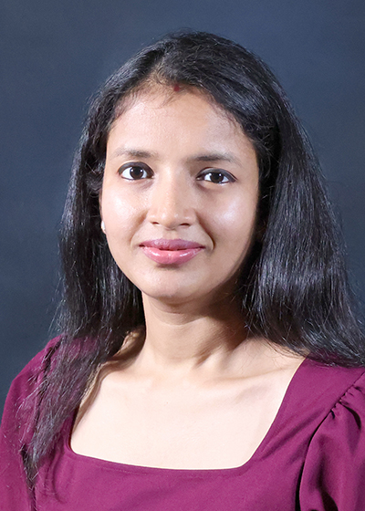

intElligent QUantum And wireLess communication Systems (EQUALS) Lab
Department of Computer Science and Engineering
Mississippi State University
Mississippi State, MS 39762

Vini Chaudhary is an Assistant Professor in the Department of Computer Science and Engineering at Mississippi State University, where she serves as the Director of the EQUALS Lab. She previously worked as a Postdoctoral Research Associate at Northeastern University from 2021 to 2024 under the supervision of Prof.Kaushik Chaudhary in the GENESYS Lab. Chaudhary earned her Ph.D. in Electrical Engineering from the Indian Institute of Technology (IIT) Delhi in 2021 under Prof.Swades De as part of the Communication Networks Research Group (IITD-CNRG), and her M.Tech. degree in Electrical Engineering from IIT Kanpur in 2016.
Research Areas
- Quantum Communication Networks & Computing
- Wireless Communication Networks
- Cybersecurity
- Spectrum Sharing
- Cyber-Physical Systems / Smart IoT
- Applied ML, Signal Processing, & Optimization in Wireless Networks
- Explainable AI in 5G/6G Wireless Communications
- Wireless Systems Design, Experiments, and Datasets
Teaching:
Write by Prof.Vini: Research Leadership & Large-Scale Projects: Vini Chaudhary’s research focuses on advancing intelligent and data-driven computing systems, with an emphasis on applying machine learning and optimization techniques to real-world problems. Her work spans both theoretical foundations and practical system development, and she is particularly interested in interdisciplinary research that bridges computer science with applied domains. Through her research and mentoring, she actively contributes to developing scalable, efficient, and trustworthy computational solutions.
Write by Prof.Vini: Awards & Professional Recognition: Prof. Chaudhary has received recognition for her scholarly contributions through competitive research grants, publications in reputable journals and conferences, and academic honors. Her work has been well received by the research community and reflects a sustained commitment to excellence in research, teaching, and student mentorship. She continues to build a strong research portfolio while supporting undergraduate and graduate students in achieving academic and professional success.
Write by Prof.Vini: Professional Service & Leadership in the Research Community: In addition to her research and teaching activities, Prof. Chaudhary is actively engaged in professional service. She has served as a reviewer and committee member for academic conferences and journals and has contributed to curriculum development and departmental initiatives. Through these leadership and service roles, she supports the broader academic community and helps advance research and education in her field.
Contact
Department of Computer Science and Engineering, Mississippi State University